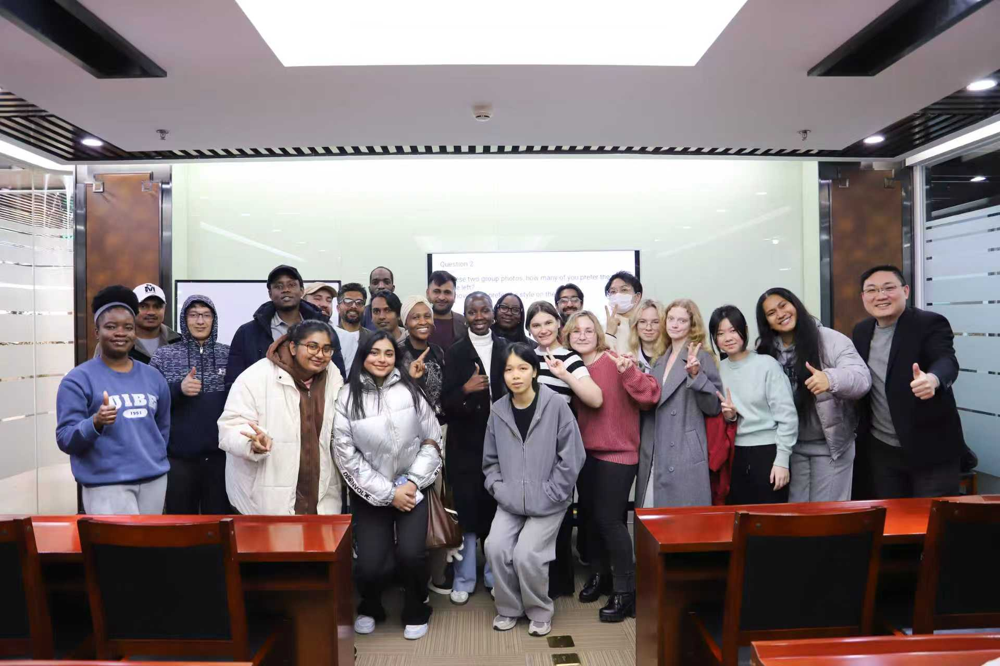

MEDIA-07
第三方报道 · MEDIA COVERAGE
董立鑫为贸大国际学院留学生解读 AI 赋能企业全球化
Decoding how AI empowers enterprise globalization for UIBE international students.
第三方媒体报道：海鑫汇创始人董立鑫为对外经贸大学国际学院留学生开展“AI 驱动企业全球化拓展”专题讲座，分享 AI 赋能市场洞察与海外业务拓展的实践方法。来源：对外经贸大学国际学院官网。
报道概述
海鑫汇创始人、和君咨询合伙人董立鑫受邀为对外经济贸易大学国际学院留学生开展“AI 驱动企业全球化拓展”专题讲座，结合企业全球化实践与人工智能发展趋势，分享 AI 赋能市场洞察、海外业务拓展及全球化经营的实践方法，帮助国际化人才理解 AI 时代中国企业全球化发展的新机遇与新路径。

海鑫汇视角
AI 不是替代全球化经验，而是放大它：更快的市场洞察、更低的海外拓展门槛，给国际化人才新的杠杆。
原文链接
本文为第三方媒体对海鑫汇创始人董立鑫的公开报道整理，首发于 对外经贸大学国际学院官网。 查看官网原文 →
想把“出海”从口号变成可执行的路径？先做一次免费首诊判断。
预约免费首诊 →